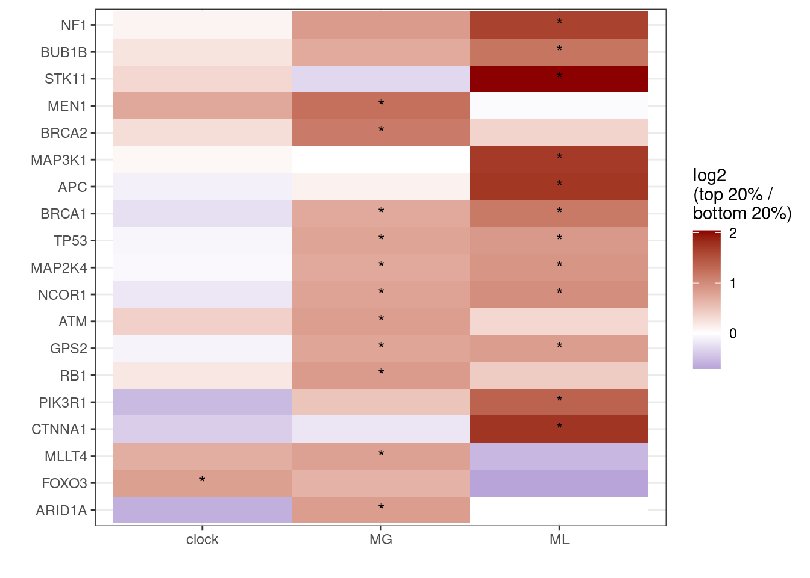
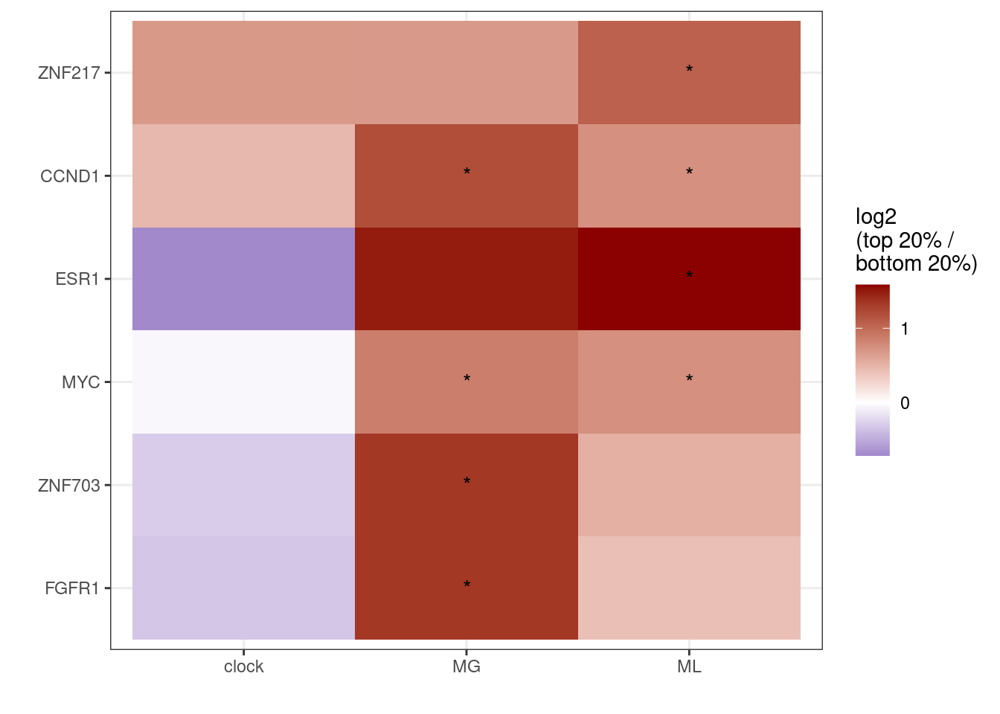

7 CNA
source(here::here("scripts/init.R"))cna_df <- get_gene_cna_df() %>%
filter(ER != "normal") %>%
mutate(type = forcats::fct_explicit_na(type)) %>%
gather("feat", "score", -(samp:ER)) %>% as_tibble()cna_df_count <- cna_df %>%
group_by(feat, ER) %>%
mutate(score = cut(score, breaks = quantile(score, 0:5 / 5, na.rm = TRUE), include.lowest = TRUE, labels = as.character(1:5))) %>%
filter(!is.na(cna)) %>%
count(name, ER, feat, cna, score) %>%
group_by(name, ER, feat, score) %>%
mutate(p = n / sum(n)) %>%
ungroup()cna_pvals <- calc_features_cna_pvals(feats = c("clock", "MG", "ML")) %>%
filter(ER != "all") %>%
group_by(ER) %>%
mutate(qval_loss = p.adjust(pval_loss), qval_gain = p.adjust(pval_gain)) %>%
ungroup()signif_cna_loss <- cna_pvals %>%
filter(type %in% "TSG", qval_loss <= 0.01, p_loss >= 0.05) %>%
mutate(name1 = glue("{name} ({ER})")) %>%
ungroup()
signif_cna_loss## # A tibble: 24 x 16
## name ER type feat pval_loss pval_gain n_loss n_gain n_neut n
## 1 APC ER+ TSG ML 1.063609e-06 0.64586372 100 95 803 998
## 2 ARID1A ER+ TSG MG 1.428949e-08 0.56284763 247 5 746 998
## 3 ATM ER+ TSG MG 3.426603e-12 0.52459023 436 12 550 998
## 4 BRCA1 ER+ TSG MG 5.445255e-06 0.01060561 246 101 651 998
## 5 BRCA1 ER+ TSG ML 4.613741e-07 0.85667669 246 101 651 998
## 6 BRCA2 ER+ TSG MG 4.375058e-10 0.22370787 287 29 682 998
## p_loss p_gain p_neut qval_loss qval_gain name1
## 1 0.1002004 0.09519038 0.8046092 3.041921e-04 1 APC (ER+)
## 2 0.2474950 0.00501002 0.7474950 4.215400e-06 1 ARID1A (ER+)
## 3 0.4368737 0.01202405 0.5511022 1.031407e-09 1 ATM (ER+)
## 4 0.2464930 0.10120240 0.6523046 1.541007e-03 1 BRCA1 (ER+)
## 5 0.2464930 0.10120240 0.6523046 1.328757e-04 1 BRCA1 (ER+)
## 6 0.2875752 0.02905812 0.6833667 1.303767e-07 1 BRCA2 (ER+)
## # ... with 18 more rowssignif_cna_gain <- cna_pvals %>%
filter(type %in% "ONC", qval_gain <= 0.01, p_gain >= 0.05) %>%
mutate(name1 = glue("{name} ({ER})")) %>%
ungroup()
signif_cna_gain## # A tibble: 8 x 16
## name ER type feat pval_loss pval_gain n_loss n_gain n_neut n
## 1 CCND1 ER+ ONC MG 0.3150388889 4.476648e-11 40 293 665 998
## 2 CCND1 ER+ ONC ML 0.4951036089 2.999444e-05 40 293 665 998
## 3 ESR1 ER+ ONC ML 0.0006269846 1.792865e-05 236 74 688 998
## 4 FGFR1 ER+ ONC MG 0.5059516735 1.633273e-09 164 256 578 998
## 5 MYC ER+ ONC MG 0.3669024091 7.977468e-09 27 403 568 998
## 6 MYC ER+ ONC ML 0.1339700251 2.848759e-08 27 403 568 998
## p_loss p_gain p_neut qval_loss qval_gain name1
## 1 0.04008016 0.2935872 0.6663327 1.0000000 1.369854e-08 CCND1 (ER+)
## 2 0.04008016 0.2935872 0.6663327 1.0000000 8.818367e-03 CCND1 (ER+)
## 3 0.23647295 0.0741483 0.6893788 0.1529842 5.288952e-03 ESR1 (ER+)
## 4 0.16432866 0.2565130 0.5791583 1.0000000 4.965150e-07 FGFR1 (ER+)
## 5 0.02705411 0.4038076 0.5691383 1.0000000 2.417173e-06 MYC (ER+)
## 6 0.02705411 0.4038076 0.5691383 1.0000000 8.603252e-06 MYC (ER+)
## # ... with 2 more rows7.0.0.1 Extended Data Figure 10C
options(repr.plot.width = 5, repr.plot.height = 7)
df <- cna_df_count %>%
mutate(name1 = glue("{name} ({ER})")) %>%
filter(name1 %in% signif_cna_loss$name1) %>%
group_by(feat, ER, name) %>%
mutate(n_tot = sum(n)) %>%
select(-p) %>%
spread(score, n) %>%
filter(cna == "LOSSLOH") %>%
mutate(r = log2(`5` / `1`)) %>%
ungroup()
p_loss <- df %>%
filter(feat %in% c("clock", "MG", "ML")) %>%
left_join(signif_cna_loss %>% select(name, ER, feat, qval_loss)) %>%
mutate(label = ifelse(qval_loss <= 0.01, "*", "")) %>%
# filter(ER == 'ER+') %>%
select(name, ER, feat, r, label) %>%
ggplot(aes(x = feat, y = reorder(name, r), fill = r)) + geom_tile() + scale_fill_gradient2(name = "log2\n(top 20% /\nbottom 20%)", low = "darkblue", mid = "white", high = "darkred", midpoint = 0, breaks=c(-2,-1,0,1,2)) + ylab("") + xlab("") + geom_text(aes(label = label)) + theme(panel.grid.major = element_blank(), panel.grid.minor = element_blank()) ## Joining, by = c("feat", "ER", "name")p_loss + theme_bw()## Warning: Removed 33 rows containing missing values (geom_text).
options(repr.plot.width = 5, repr.plot.height = 7)
df_gain <- cna_df_count %>%
mutate(name1 = glue("{name} ({ER})")) %>%
filter(name1 %in% signif_cna_gain$name1) %>%
group_by(feat, ER, name) %>%
mutate(n_tot = sum(n)) %>%
select(-p) %>%
spread(score, n) %>%
filter(cna == "GAINAMPL") %>%
mutate(r = log2(`5` / `1`)) %>%
ungroup()
p_gain <- df_gain %>%
filter(feat %in% c("clock", "MG", "ML")) %>%
left_join(signif_cna_gain %>% select(name, ER, feat, qval_gain)) %>%
mutate(label = ifelse(qval_gain <= 0.01, "*", "")) %>%
select(name, ER, feat, r, label) %>%
ggplot(aes(x = feat, y = reorder(name, r), fill = r)) + geom_tile() + scale_fill_gradient2(name = "log2\n(top 20% /\nbottom 20%)", low = "darkblue", mid = "white", high = "darkred", midpoint = 0, breaks=c(-2,-1,0,1,2)) + ylab("") + xlab("") + geom_text(aes(label = label)) + theme(panel.grid.major = element_blank(), panel.grid.minor = element_blank()) ## Joining, by = c("feat", "ER", "name")p_gain + theme_bw()## Warning: Removed 10 rows containing missing values (geom_text).
gc()## used (Mb) gc trigger (Mb) max used (Mb)
## Ncells 4241171 226.6 7549862 403.3 7549862 403.3
## Vcells 22908169 174.8 53036147 404.7 53036125 404.7